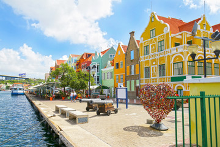
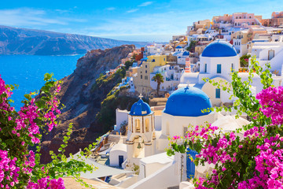
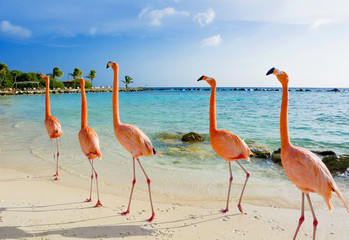

Curaçao
© 2021 greece all rights reseverd
Op een vakantie op Curaçao zijn de witte stranden omzoomd met palmbomen in grote getale aanwezig. Een strandvakantie aan de Caribische Zee voldoet hier dan ook aan meerdere wensen: van een bruisende zonvakantie op Mambo Beach en Jan Thiel Baai tot rust in Westpunt. Bezoek ook zeker de kleurrijke Handelskade tijdens je stedentrip in Willemstad of maak een excursie naar het prachtige Christoffelpark. Bon bini op dushi Curaçao!

Griekenland
© 2021 greece all rights reseverd
Een vakantie naar Griekenland kun je bij TUI naar eigen wens invullen. De zon schijnt en de zee is in dit Zuid-Europese land altijd binnen handbereik. Kies een van de schitterende eilanden uit deze vakantie. Van Samos, Lesbos tot Zakynthos, Griekenland is prachtig. Maar ook hoofdstad Athene is een echte must-see met de Akropolis als een van de hoogtepunten.

Aruba
© 2021 Aruba all rights reserved
Alleen al het zoeken naar een vakantie naar Aruba tovert een glimlach op je gezicht! De aangename tropische temperaturen en witte stranden met de unieke divi divi bomen vormen een idyllisch decor voor een zonvakantie aan de Caribische Zee. Niet voor niets wordt Aruba 'One Happy Island' genoemd. Op duikvakantie op Aruba? Rondom het eiland vind je interessante koraalformaties en het grootste scheepswrak van het Caribisch gebied. Bon bini!